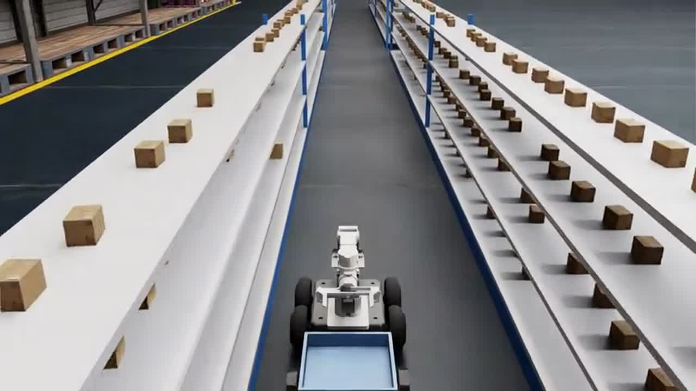

AMR digital twin: 18-inch aisle navigation
An Isaac Sim twin of a 0.40 m skid-steer robot that drives autonomously through 45.7 cm warehouse aisles, with 2.86 cm clearance on each side, using only its own simulated sensors.
- 3 of 3 missions with no contact, 0.9–1.9 cm max off-centre
- RealSense D455 stereo + IMU, wheel odometry, EKF fusion
- Arm pick-and-place demo; VLM aisle checks
Isaac Sim 5.1cuVSLAMnvbloxNav2